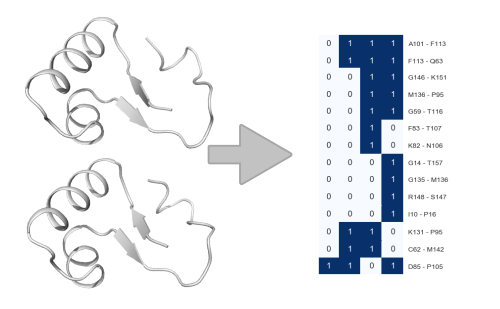
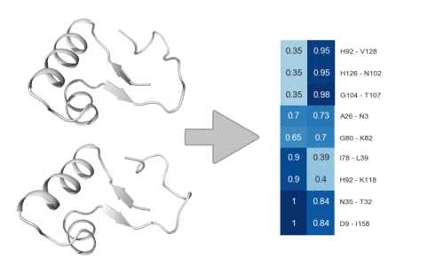
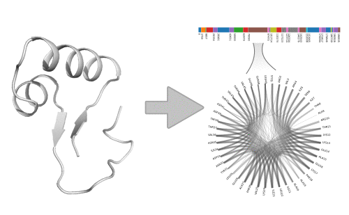

Recipes

Compare interactions across static structures
Example applications:
- - Contact networks of proteins from different experimental conditions

Compare interactions across simulations/ensembles
Example applications:
- - Compare interaction network of the same receptor with different ligands
- - Compare interaction network of protein in different conditions (solvation, salt-concentration, phosphorylation etc.)

Identify and compare simulation substate contacts
Example applications:
- - Identify substates in MCMC simulations
- - Characterize ligand binding pocket poses

Protein family interaction comparison
Example applications:
- - Identify stabilizing interactions within GPCR families
- - Make large-scale interaction analysis of any PFAM subfamily